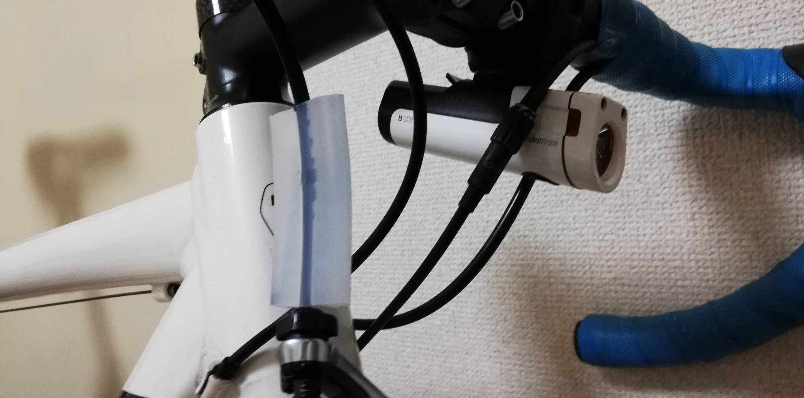

Road Bikes and Aerodynamic Drags
The biggest resistance when riding a road bike is air drag. Therefore, when we ride in a group, we take turns to work as a wind shield and try to reduce the overall aerodynamic drag (the leader in the photo is me at work pulling the front of the group). Nowadays, bicycle manufacturers are making great efforts to reduce aerodynamic drag by every single possible 1w.
There are several ways to reduce aerodynamic drag, one of them is to put the wires needed for braking and shifting inside the frame. However, such high-spec bicycles are very expensive, and for owners who already have old bicycles, there was no way to reduce the aerodynamic drag of the wires. I studied mechanical engineering and fluid dynamics at Tokyo Institute of Technology, and learned how to use simulation tools. I used this knowledge to develop a aerodynamic part to reduce the drag of wires.
Development of Aero-Cover for brake wires
The idea is simple. After using CFD (computational fluid dynamics) to find the optimum shape, I asked a local factory to make a prototype from silicon. In addition, I developed a small wind tunnel by myselves and verified whether the aerodynamic drag was actually reduced by installing the cover. The wind tunnel, which was calibrated using data from a previous study, proved that the aerocover did indeed reduce drag.
After prototyping the parts, they proposed the idea to several companies. Unfortunately, the idea was not adopted because the number of rim-brake bicycles with cables outside of their frames will decrease as disc brakes become more popular. However it was a good experience for me to go through the whole process from planning to proposal by myself.
For details of the development, please see the following page.